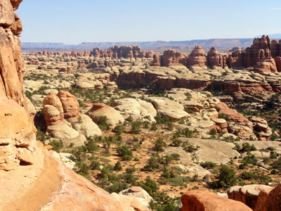
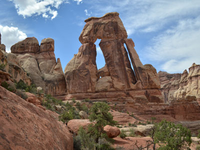
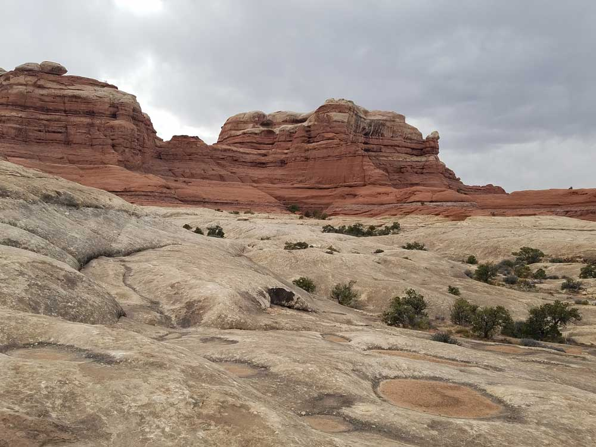
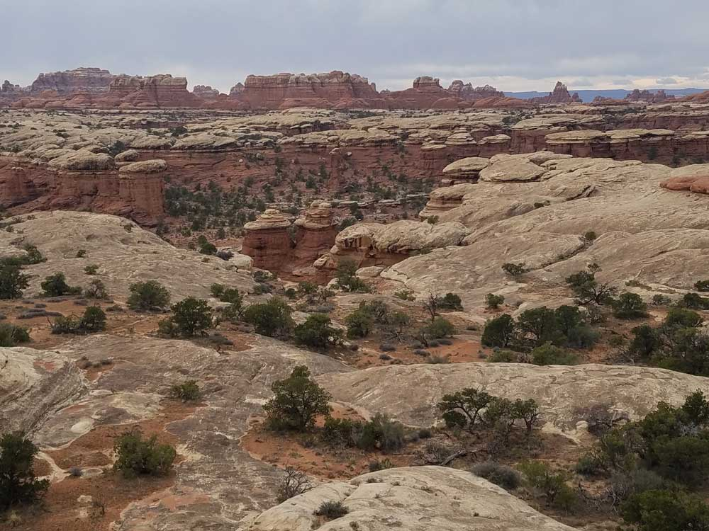

.jpg){kind=link}
Massive red and white eroded sandstone pillars that extend southwards for many miles, forming a jumbled and hostile landscape.
General Information
- Hours:
- Open year-round, 24 hours a day
Needles Visitor Center: hours vary by season - Fees:
- Private Vehicle: $30 (valid for 7 days)
Motorcycle: $25
Pedestrian/Bicycle: $15 per person - Pet Policy:
- Pets are not allowed on trails, at overlooks or in the backcountry, even if carried
Leashed pets are allowed in the developed campground and along paved roads - Closest Cities with Hotels:
- Monticello, UT, 50 miles
Moab, UT, 75 miles - Seasons:
- Open all year; spring and fall offer the most comfortable weather
Very hot during summer; cold with occasional snow in winter - Location:
- Needles District, Canyonlands National Park, UT
- Website:
- nps.gov/cany
How to Get There
From Moab (75 mi): Drive south on US-191, turn right onto UT-211 toward The Needles district of Canyonlands National Park, and continue to the visitor center near the district entrance.
Overview
The Needles forms the southeastern corner of Canyonlands National Park and is named for the colorful spires of red and white banded Cedar Mesa Sandstone that dominate the landscape. Although it lies only about 15 miles south of Island in the Sky, the two districts are not connected by road inside the park, and the Needles feels far more remote, with fewer visitors and a wilder, more intimate landscape of spires, arches, grabens, domes and narrow slickrock canyons.
Visitors come to the Needles primarily for hiking and backcountry exploration. Unlike the sweeping overlooks of Island in the Sky, the Needles is best experienced on foot, with an extensive trail network that winds through narrow rock fractures, across slickrock benches and into grassy parks surrounded by towering pinnacles. The district also preserves numerous ancestral Puebloan granaries, dwellings and rock art panels, along with remnants of the area’s ranching history, and its rugged four-wheel-drive roads are some of the most famous and challenging in the Southwest.
Sightseeing and Scenic Drives
The district’s paved scenic drive runs about 6.5 miles from the visitor center to the Big Spring Canyon Overlook, with short side roads and pull-offs to some of its most popular stops. Along the way, visitors can see the Roadside Ruin, a well-preserved ancestral Puebloan granary, Wooden Shoe Arch Overlook, the historic cowboy camp at Cave Spring, and Pothole Point, where rainwater collects in slickrock depressions that support tiny desert organisms. On the drive in along Utah Route 211, Newspaper Rock, one of the largest and best-preserved petroglyph panels in the Southwest, is a must-see stop, and the road passes through scenic Indian Creek Canyon on its way to the park.
Hiking
The Needles has more than 60 miles of interconnected trails, offering everything from short nature walks to long day hikes and multi-day backpacking trips. Easy hikes include Roadside Ruin, Pothole Point and Cave Spring, which includes two wooden ladders, while the Slickrock Trail is a moderate loop with panoramic views. The district is best known for its longer, more strenuous hikes, including Chesler Park, a grassy meadow encircled by sandstone spires and reached through the narrow Joint Trail fractures, Druid Arch, the Peekaboo Trail with its ladders and slickrock routes, the Confluence Overlook Trail to a view of the meeting of the Green and Colorado Rivers, and the very strenuous Lower Red Lake Canyon Trail to the Colorado River. Many trails follow cairns across bare slickrock, so good route-finding skills and plenty of water are essential.
Other Activities
The Needles is famous for four-wheel-drive adventure, especially the notoriously difficult Elephant Hill road, which challenges even experienced drivers with steep slickrock ledges and tight switchbacks, as well as the Colorado Overlook road and the Lavender Canyon and Horse Canyon routes. Backpacking is one of the district’s top activities, with designated backcountry campsites that require a permit. Just outside the park, Indian Creek is one of the world’s premier destinations for crack climbing. The district is part of Canyonlands’ International Dark Sky Park, offering superb stargazing, and visitors can also join seasonal ranger programs. Archaeology enthusiasts will find numerous granaries, cliff dwellings and rock art panels throughout the district’s canyons.
Getting to the Needles
The Needles District is located in southeastern Utah, about 75 miles south of Moab and about 50 miles northwest of Monticello. The only paved access is Utah Route 211, which branches west from U.S. 191 about 40 miles south of Moab and 14 miles north of Monticello, then winds for about 35 miles through Indian Creek Canyon to the park entrance. The drive from Moab takes about 1.5 hours, and the drive from Island in the Sky takes about 2.5 hours. The nearest airport is Canyonlands Regional Airport north of Moab, with larger airports in Grand Junction, Colorado, and Salt Lake City. Services along Route 211 are extremely limited, so travelers should fill up with fuel in Moab or Monticello.
Seasons
The Needles is open year-round, but spring (April to May) and fall (September to October) offer the most pleasant weather for hiking, with mild days and cool nights. Summers are hot, with daytime highs often in the 90s °F or higher and little shade on the trails, and the monsoon season from July through September can bring sudden thunderstorms and flash flooding in canyons and washes. Winters are cold and quiet, with occasional snow, icy trails and nighttime temperatures well below freezing. Four-wheel-drive roads such as Elephant Hill and Salt Creek may close seasonally or after storms, and visitor center hours are reduced in winter.
Camping and Lodging
There is no lodging inside the Needles District. The Needles Campground (formerly Squaw Flat Campground), located among slickrock domes near several major trailheads, is the district’s developed campground, with sites available by reservation during the busy season, and group sites are also available. Backpackers and four-wheel-drive travelers can stay at designated backcountry campsites with a permit. Just outside the park, the Needles Outpost has traditionally offered camping and a small store, and several Bureau of Land Management campgrounds in the Indian Creek area, including Hamburger Rock and Superbowl, offer first-come primitive camping. The closest hotels are in Monticello, about an hour away, while Moab, about 1.5 hours north, offers the widest range of hotels, restaurants and services. Blanding, about 1.5 hours south, is another option for travelers heading toward Bears Ears and southern Utah.
Visitor Centers
The Needles Visitor Center, located just inside the park entrance on Route 211, offers exhibits, a short film, a bookstore, restrooms, water and ranger information, along with backcountry and four-wheel-drive permits. Hours vary by season, with reduced hours or temporary closures in winter. Rangers can provide current information on trail and road conditions, which is especially important for backpackers and drivers heading onto the district’s rugged backcountry roads.
This article uses material from the National Park Service "Canyonlands National Park" website and the Wikipedia article "Canyonlands National Park", which is released under the Creative Commons Attribution-Share-Alike License 3.0
Featured Trails
Fabio Achilli from Milano, Italy, CC BY 2.0, via Wikimedia Commons; Image Size Adjusted
Cave Spring Trail
0.6 mile loop, 67 feet elevation gain, Easy
Short loop trail featuring ancient rock art, historic cowboy camps, sandstone ladders, and elevated desert panoramas across rugged canyon terrain.

Jeff P from Berkeley, CA, USA, CC BY 2.0, via Wikimedia Commons; Image Size Adjusted
.jpg){kind=link}
Chesler Park
10.7 miles roundtrip, 615 feet elevation gain, Strenuous
Strenuous backcountry loop winding through towering sandstone spires, narrow rock fractures, grassy desert meadows, and sweeping canyon panoramas.
Fabio Achilli from Milano, Italy, CC BY 2.0, via Wikimedia Commons; Image Size Adjusted
Confluence Overlook Trail
11 miles roundtrip, 309 feet elevation gain, Strenuous
Remote desert trail crossing open sandstone terrain to a dramatic cliffside viewpoint overlooking the meeting point of two major Southwestern rivers.

Jeff P from Berkeley, CA, USA, CC BY 2.0, via Wikimedia Commons; Image Size Adjusted
Druid Arch
10.8 miles roundtrip, 1,500 feet elevation gain, Strenuous
A massive stone arch rising above a rugged canyon landscape, reached by a challenging backcountry trail that passes through sandstone formations, desert washes, and expansive wilderness scenery.
Fabio Achilli from Milano, Italy, CC BY 2.0, via Wikimedia Commons; Image Size Adjusted
Lower Red Lake Canyon Trail
18.7 miles roundtrip, 3,054 feet elevation gain, Strenuous
Strenuous backcountry route descending through isolated sandstone canyons, fault valleys, and desert cliffs to the banks of a major wilderness river.
Fabio Achilli from Milano, Italy, CC BY 2.0, via Wikimedia Commons; Image Size Adjusted
Peekaboo Loop Trail
10.8 miles roundtrip, 429 feet elevation gain, Strenuous
Strenuous desert trail traversing slickrock benches, narrow canyons, ladders, and sandstone overlooks with expansive views of rugged canyon country.
Fabio Achilli from Milano, Italy, CC BY 2.0, via Wikimedia Commons; Image Size Adjusted
Pothole Point Trail
0.6 mile loop, 36 feet elevation gain, Easy
Short slickrock loop featuring desert pothole ecosystems, sandstone formations, and panoramic views of towering red rock spires and canyon landscapes.
Fabio Achilli from Milano, Italy, CC BY 2.0, via Wikimedia Commons; Image Size Adjusted
Roadside Ruin
0.3 mile loop, 7 feet elevation gain, Easy
Short interpretive desert trail leading to a well-preserved ancient granary surrounded by slickrock, native vegetation, and canyon scenery.
Fabio Achilli from Milano, Italy, CC BY 2.0, via Wikimedia Commons; Image Size Adjusted
Slickrock Trail
2.4 miles loop, 73 feet elevation gain, Moderate
Moderate slickrock loop featuring panoramic canyon overlooks, sandstone formations, and expansive desert views stretching toward distant mountain ranges.

